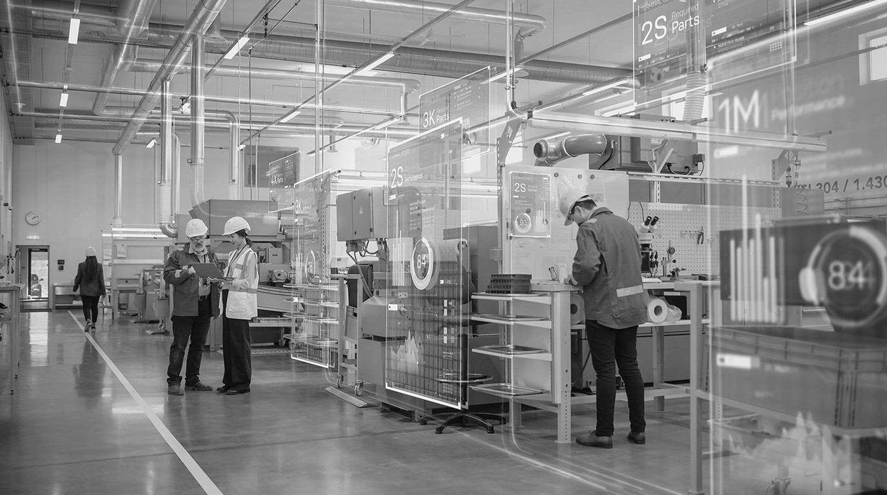

Connectivity
Portability
Laboratory
컨포트랩은 규모에 관계없이 모든 기업이 제조 AX의 효용을 누릴 수 있는 세상을 꿈꿉니다.
규모와 예산에 관계없이
모든 현장이 AX의 효용을
누릴 수 있도록
제조 현장에 사람의 경험과 데이터를 결합한 AI 기반 운영을 만듭니다.
오류와 재작업이 줄어 품질이 안정되고, 돌발 정지와 불필요한 대기가 줄어 가동률이 오르는 현장을 지향합니다.

Our Vision
기술이 현장의 가능성을 확장하는 세상
컨포트랩은 산업 운영이 효율을 넘어 지속가능성과 사회적 가치를 함께 만드는 미래를 지향합니다.
Location
컨포트랩 오피스
- 주소
- 서울특별시 송파구 송파대로 167, B동 817호 (문정동, 문정역테라타워)
- 연락
- T 070-8287-1613 · F 02-2007-0399 · E admin@conportlab.com